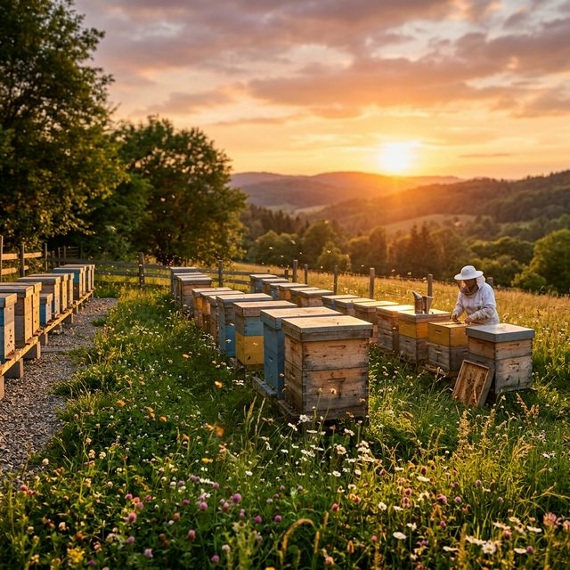

Scopri il gusto autentico del miele prodotto con passione nelle colline di Montecalvo Versiggia
Scopri i Nostri ProdottiEsplora la nostra varietà di mieli artigianali: acacia, castagno, millefiori e molti altri. Ogni vasetto racconta una storia di fiori e dedizione.
Vai al CatalogoScopri il meraviglioso mondo delle api, le proprietà della pappa reale e tutti i segreti della produzione del miele. Conoscenza che viene dalla natura.
Scopri di PiùVieni a trovarci ai mercati di Pavia, Broni e Stradella. Ti aspettiamo per farti assaggiare i nostri prodotti e raccontarti la nostra storia.
ContattaciScopri i nostri laboratori e le esperienze in apiario. Un'avventura indimenticabile per avvicinare i più piccoli alla natura.
Scopri di PiùDa generazioni produciamo miele di qualità nelle colline dell'Oltrepò Pavese. Ogni vasetto è il risultato di un lavoro paziente, del rispetto per le api e dell'amore per la natura.
I nostri prodotti sono 100% naturali, senza additivi o conservanti. Solo miele puro, come natura vuole.

Per qualsiasi dolce curiosità